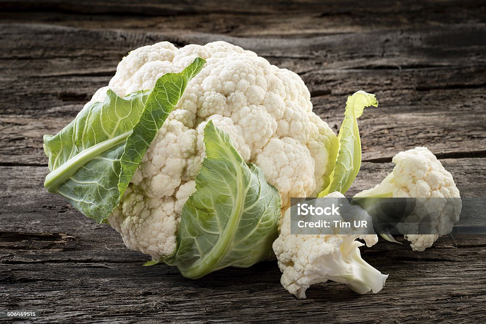

Cauliflower is a popular and versatile vegetable known for its
mild flavor and dense, creamy texture. It belongs to the Brassica
family, along with broccoli and cabbage. Cauliflower is believed
to have originated in the Mediterranean region, particularly in
areas around modern-day Italy and Cyprus. From there, it spread
across Europe and later to Asia and the rest of the world.
Nutritionally, cauliflower is low in calories but rich in vitamins C
and K, fiber, antioxidants, and folate. It also contains beneficial
plant compounds that support heart health, digestion, and immunity.
Its versatility and nutrients make cauliflower a valuable part of
a healthy diet.